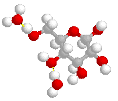
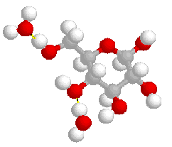

Physical Science
{kind=link}
Pamela L. Bryant
Associate Professor of Chemistry
Howard Payne University
Brownwood, Texas 76801
Cell (432) 413-4303
Work (325) 646-2502 ext 5408
EDUCATION
Ph.D., May 2000 under L. G. Butler, Cumulative GPA 3.894, Louisiana State University, Baton Rouge, LA
Dissertation: Solid-State Nuclear Magnetic Resonance of High-Spin nuclei with Large Quadrupolar Couplings
M.A., 1990 Secondary Education with emphasis in Chemistry under M. G. Robertson, University of Texas Permian Basin, Odessa, Texas
Thesis: Gender, Tracking and Prior Knowledge Effects on Science Achievement
B.S., 1976 Major: Mathematics , Minor: Chemistry, University of Texas Permian Basin, Odessa, Texas
RECOGNITIONS
Nominated for Piper Award Teaching Excellence Award by HPU Faculty 2007-2008
HPU Outstanding Faculty Award 2005-2006
HPU Excellence in Teaching Award 2003
LSU Chemistry Research Assistant Award for Superior Performance and Productivity 1999
Exxon Distinguished Award for Science Teaching, Midland Independent School District 1991
TEACHING DISCIPLINES
Biochemistry Astronomy General Chemistry
EXPERIENCE
2005- present Department Head, Physical Sciences, Howard Payne University
2001-present Associate Professor of Chemistry, Howard Payne University,
2000-2001: Post-doc Karen K. Gleason and Robert E. Cohen, MIT, Cambridge, MA
Solid-state 2H and 1H NMR, DSC, DMA, TG, DTA, Raman, tensile test and injection molding of an aliphatic aromatic amorphous polymer.
1994-1999: Research assistant – L. G. Butler, LSU, Baton Rouge, LA
Solid-state 27Al, 29SI, 1H,2H, 31P, 13C, 7Li, 119Sn, 93Nb, 19F and 14 N NMR of various solid materials including minerals, clays, cements, aluminoxanes, imidoalanes, sol-gels, zeolites, human arterial plaques, polymer blends and synthetic rubbers. I can also troubleshoot and do minor repairs to an NMR spectrometer or probe.
1991-1992: Owner, Venture Medical, Midland, TX
Owned and managed this software service and support company with six employees, computerizing doctor’s offices, setting up electronic claim submissions, training the staff and writing custom Foxbase programs. Programmed in Foxbase a multi-user multi-functional commercial trucking program for Winkles Trucking, Pecos, Texas.
1982-1991: High School Chemistry teacher, Midland Independent School District, Midland, Texas
Taught chemistry, advanced placement (AP) chemistry and concurrent enrollment chemistry with Midland College.
Texas University Interscholastic League Math and Science Coach, MISD. The team won the district competition three years in a row and placed second at the regional competition.
Safety advisory committee member, MISD
Computer and technology committee member, MISD
WORKSHOPS ATTENDED
Interferometry in Radio Astronomy, the VLA and the VLBA in Socorro, New Mexico Chautauqua Courses offered by the University of Dayton, Summer 2007
Biochemistry Workshop on Modernizing the Biochemistry Curriculum, California, summer 2007
CLEA Workshop on Astronomy, summer 2006, Gettysburg, PA
Lab Safety Institute 24-hour Short Course, Texas State University, San Marcos, TX 2005
POGIL Workshop, Tarleton State University, Stephenville, TX, 2003
POGIL Advanced Workshop, Texas State University, San Marcos, TX, 2006
PUBLICATIONS
P. L. Bryant “Hard Work Lost God’s Gift Received “ in College Faith 3, 150 Christian Leaders and Educators Share Faith Stories from Their Student Days, R. Al. Knou, Ed. Andrews University Press Berrien Springs, Michigan, 2006, pg 81.
P. L. Bryant, A. C. Kolbert, Z. Gan, A. J. Woo, K. Wu, Y. Lee, F. R. Fronczek, and L. G. Butler “9.4 T and 19.6 T Solid-State 93Nb MAS NMR And X-ray Crystal Structure of [NH4]5[NBF4O][NBF7]2” in progress
P. L Bryant, L. G. Butler, A.P. Reyes, P. Kuhns, P. “27Al Field-Swept and Frequency-Stepped NMR for Sites with Large Quadrupole Coupling Constants” Solid State NMR, 2000, 16, 63-67.
P. L. Bryant, Z. Gan, W. Lukiw, and L. G. Butler “High Field 19.6 T 27Al Solid-State MAS NMR of Aluminated Brain Tissue “Journal of Biological Nuclear Magnetic Resonance,170, 2004 257-262.
A.A. Mrse, P.L. Bryant, F.J. Hormes, L.G. Butler, N. Satyanarayana, B. Rambabu “Solid-state NMR and XANES studies of lithium and silver silicate gels synthesized by the sol-gel route “Journal of Non-Crystalline Solids, 318 (2003) 296-304.
P. L. Bryant, C. R. Harwell, R. Matthews, B. Grant, C. Watkins, L. S. Simeral, R. W. Hall, L. G. Butler “Structural Characterization of MAO and Related Aluminum Complexes. 1. Solid-State 27Al NMR with Comparison to EFG Tensors from ab initio Molecular Orbital Calculations” J. Am. Chem. Soc, 2001, 123, 12009-12017.
R. W. Hall, P. L. Bryant, M. B. Crawford, L. G. Butler, P. A. Limbach “Evaluation of Calculated EFG Tensors, Solid-State 27Al NMR and Mass spectrometry of Biological Complexes Related to Alzheimer’s Disease” submitted to The International Journal of Quantum Chemistry fall 2000.
Mrse, A. A.; Bryant, P. L.; Hormes, F. J.; Butler, L. G.; Satyanarayana, N.; Rambabu, B., Solid-State NMR and XANES Studies of Lithium and Silver Silicate Gels Synthesized by the Sol-Gel Route. J. Non-Crystalline Solids, 2003, 318, 296-304
L. G. Butler, J. W. Owens, F. K. Cartledge, R. L. Kurtz, G. R. Byerly, A. J. Wales, P. L. Bryant, E. F. Emery, B. Dowd, and X. Xie “Synchrotron X-ray Microtomography, Electron Probe Microanalysis, and NMR of Toluene Waste in Cement” Environmental Science and Technology 2000, 34, 3269-3275.